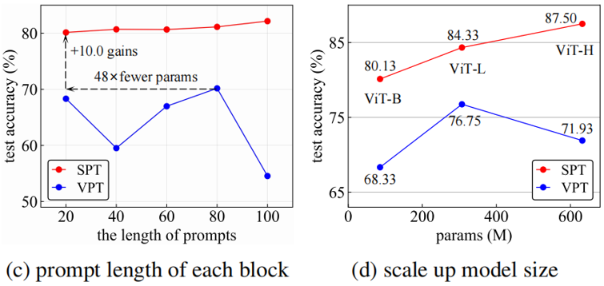

01 Summary of the paper
Our work proposes a simple and novel method (termed SPT) to improve visual prompt tuning. Specifically, we observe that the mutual information between prompt tokens and image patch tokens gradually increases during the prompt tuning process of VPT (a strong baseline), and propose the idea of constructing prompts based on inferred token prototypes. This idea can make the prompt tokens and patch tokens share larger mutual information at the beginning of training, which benefits the rapid convergence of the model and achieve higher accuracy. Sufficient experiments and analysis have verified the effectiveness of our method.
02 Weakness of existing methods
We first examine the weakness of existing methods (e.g., VPT, GateVPT, P-Tuning, etc.) and summarize them as follows.
Prompt initialization. Existing prompt-based methods employ the strategy of initializing prompts randomly (e.g., uniform or normal) and then update them during tuning,
akin to optimizing the parameters of neural networks.
However, the distinct initialization for prompts significantly impact accuracy,
as shown in the original paper of VPT and its variants.
Prompt length. The only extra hyperparameter that requires tweaking,
in comparison to Full fine-tuning, is the number of inserted prompt tokens.
While ablation studies showcase that VPT and its variants are usually
sensitive to the number of inserted prompts.
Subpar performance with self-supervised pretraining. Recent research (GateVPT) has proven that VPT and its variants perform poorly under self-supervised pre-training models.
03 Observation and motivation
We infer that prompts initialization is the main factor and pay attention to the relationship between prompt tokens and image patch tokens during tuning.
We observe that the mutual information between them gradually increases, as illustrated blue curves in Fig. 1.
This motivates us to construct prompts based on inferred token prototypes, as this will make the prompt tokens and patch tokens share larger mutual information at the beginning of training.
Figure 1. VPT presents the behavior of the Normalized Mutual Information (NMI) between prompts and patch tokens gradually increases during tuning time. SPT has large NMI at the beginning, which will facilitate rapid convergence and achieve more advanced results.
04 Framework and method
Figure 2. Self-Prompt Tuning. We propose to construct prompts based on the input for visual tuning. Left: We input a batch of the training data from the downstream task into the pre-trained model to get the forward patch embeddings. Right: We initialize prompts with sampled patch embeddings. Similar to VPT, we proposed SPT-Shallow and SPT-Deep depending on the layers involved. Only the prompts and task head parameters are learnable during adaptation on downstream tasks while the transformer encoder is frozen.
The number of candidate tokens is usually far more than the length of the prompts. To alleviate this issue, we propose four sampling strategies.k-means cluster, better performance but time-consuming.
maxpooling, meanpooling, and random sample, satisfactory performance and negligible time cost.
05 Experiments and annalysis
Ablation on prompt sampling strategies.
Table 1. Experimental results (%) show that all prompt sampling strategies are significantly superior to the VPT baseline with random initialization.

Ablation on basic components.
Figure 3. SPT is robust to prompt length changes and presents better scaling behavior.
Comparison under self-supervised pre-trained backbones.
Table 2. Our method achieves gains of 10% to 30% in average accuracy compared to VPT, and even outperforms Full fine-tuning in 19 out of 24 cases under MAE pre-training.
Comparison under supervised pre-trained backbones.
Table 3. “Input” and “Backbone” indicate the tuning parameter scope of each method. SPT achieves competitive results with far fewer trainable parameters.
BibTeX
@inproceedings{wang2024icml,
title = {Revisiting the Power of Prompt for Visual Tuning},
author = {Wang, Yuzhu and Cheng†, Lechao and Fang, Chaowei and Zhang, Dingwen and Duan, Manni and Wang, Meng},
booktitle = {Forty-first International Conference on Machine Learning},
year = {2024},
}